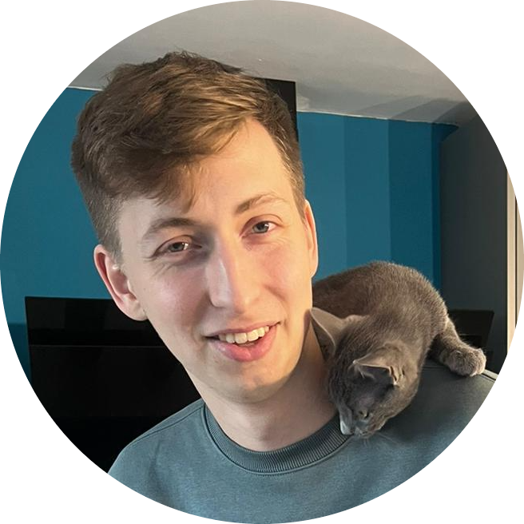

|  |
Edward HigginsFormer Assistant Laboratory Manager. My CV. |
Personal Profile:
An enthusiastic and driven biological sciences graduate and former Laboratory Assistant Manager with excellent written, analytical and verbal communication skills which has developed through three years of university and two years of working
in a private COVID-19 laboratory. Obtained strong problem solving and leadership skills during my time as a Laboratory Assistant Manger which additionally built upon a capability to understand protocols and procedures quickly and with high
accuracy. Evidence of these skills are validated via two promotions within a year at my last place of work. Recently began a python bootcamp and am interested in applying these
programming skills and my knowledge of biology to a career in data
science, where I can aid company growth and further develop my knowledge and skill set.
Skills
| Analytical Communication |
⭐⭐⭐⭐⭐ |
| Leadership |
⭐⭐⭐⭐⭐ |
| Computer Proficency |
⭐⭐⭐⭐⭐ |
|
| Problem Solving |
⭐⭐⭐⭐⭐ |
| Managment |
⭐⭐⭐⭐⭐ |
| Verbal Communication |
⭐⭐⭐⭐⭐ |
|
| Attention to detail |
⭐⭐⭐⭐⭐ |
| Time-Management |
⭐⭐⭐⭐⭐ |
| Independence |
⭐⭐⭐⭐⭐ |
|
| Decision Making |
⭐⭐⭐⭐⭐ |
| Python Programming |
⭐⭐⭐ |
| CSS |
⭐ |
|
| HTML |
⭐⭐ |
| JSON |
⭐⭐⭐ |
| Collaboration |
⭐⭐⭐⭐⭐ |
|
Empolyment
[09/20 - 09/22] Feature Medical LTD, Warner Bros Studios, Leavesden.
| Date |
Job Title |
Description |
| [09/21 - 09/22] |
Assistant Laboratory Manager |
- Managed a team of 25 staff which processed 15,000 samples a week.
- Led all training and competency assessments for new and current members of staff.
- Helped maintain the high UKAS standards.
- Played a key role in the troubleshooting efforts when issues occurred with the technology. Communicated with manufacturers and tech support regularly to learn solutions to recurring problems. Subsequently created a User
Manual/FAQs document for new and current starters.
- Routinely conducted Quality management activities; verifying and validating machines as well as running external controls from companies such as NEQAS and Twist Bioscience.
- Conversed with Machine Manufacturers and Reagent Suppliers regularly, letting them know of any machine errors or faulty reagents that we would need replacements for.
- Produced a workload monitoring system in excel, so work could be evenly distributed.
- Held monthly one to one catch up meetings with staff to allow them to speak openly about potential issues in the lab or ways the lab could be improved.
- Because of the success of the COVID-19 lab, after COVID testing was no longer needed, Feature Medical LTD opted to explore the potential opening of a Commercial Diagnostic Lab. While others became redundant I was given the
opportunity to become part of the core team to research the potential idea of this new lab.
|
| [05/21 - 09/21] |
Laboratory Technician |
- Gained a second promotion to Assistant Laboratory Manager due to my knowledge, reliability and leadership.
- Played a major role in the Lab becoming UKAS accredited, helping with the creation and completion of required documentation, assuring the staff completed there competency assessment and retraining if necessary. Was chosen to
demonstrate the entire Laboratory protocol to the UKAS assessors, complying to their high standards with great laboratory practice.
- Adapted to the change in testing method from LAMP to Rapid PCR, and helped train new starters learn the new method as well as all the existing protocols.
- Showed commitment to the company by often doing overtime to ensure we could achieve our same day result policy, and helped management and directors identify issues with the workflow to improve efficiency.
- Worked with colleagues to improve workflow issues ensuring the entire operation ran smoothly, this allowed us to increase weekly tests numbers from 3,000 in April to 10,000 in September.
- Trusted to take a count of reagent and pipette tip stock twice a week.
- Deputised for Laboratory Manager regularly allowing development of leadership skills
|
| [09/20 - 05/21] |
Laboratory Assistant |
- Achieved a Promotion to a Laboratory Technician due to my ability and understanding of the work, as well my strong leadership skills and reliability.
- Provided fast and reliable COVID-19 results via LAMP testing method for Warner Bros Studios, a vital service allowing the production of films to continue throughout the pandemic.
- Handled and processed both samples and sensitive personal information.
- Mentored new starters.
- Monitored equipment and maintained laboratory records using Excel and google sheets.
- Assisted in the rolling-out new testing lab for Warner Bros which optimised the efficiency of testing.
|
Education
University of Reading [2017 - 2020]
BSc Biological Sciences: Achieved Second Class First Division Honours.
- Opted to study modules with biomolecular emphasis including Pharmacology and Toxicology, Medical Genetics, Microbiology, Bacteriology and virology and Cancer and Cell Communication.
- I Completed a:
- Literature Review: Investigating the potential use of VLPs to create a vaccine to combat the increasing risk of the resurgence of eradicated Poliovirus
- Research Project: Expressing and isolating the proteins required for a Poliovirus VLP using an E.Coli expression system. These proteins can then used to attempt assembly of a VLP
Rickmansworth School and Sixth Form, Croxley Green [2010 - 2017]
- A Levels: Biology C, Maths C, Geography C.
- GSCEs: 9 ranging from A*- D. (including Maths, English Language and Literature).
Contact Me